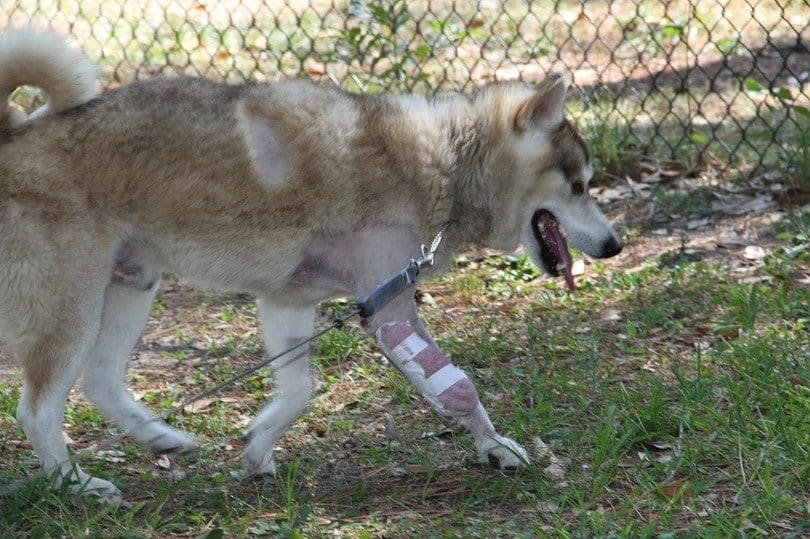

care.html
care.html
Caring for Alaskan Dogs
Routine Care, Diet, and Exercise
- Supervise your pet as you would a toddler. Keep doors closed, pick up after yourself, and block off rooms as necessary. This will keep her out of trouble and away from objects she shouldn’t put in her mouth.
- Brush her coat as needed, at least weekly.
- Clean their ears weekly, even as a puppy.
- Keep your dog’s diet consistent and don’t give them people food.
- Feed a high-quality diet appropriate for her age.
- Exercise your dog regularly, but don’t overdo it at first.

Signs of Emergency: *SEEK MEDICAL ATTENTION IMEDIATLY*
- Scratching or shaking the head, tender ears, or ear discharge
- Inability or straining to urinate; discolored urine
- Cloudiness, redness, itching, or any other abnormality involving the eyes
- Leg stiffness, reluctance to rise, sit, use stairs, run, jump, or “bunny hopping”
- Dry heaving or a large, tight, painful abdomen
- Dull coat, hair loss, sluggish, weight gain
- Any abnormal shaking, trembling, or excessive involuntary tremors
- Increased hunger and thirst, weight loss
- Straining to defecate, bleeding, licking of the area around the rectum, or smelly discharge
- Coughing, exercise intolerance, rapid breathing at rest
- Bruises easily or bleeds a lot from a small wound